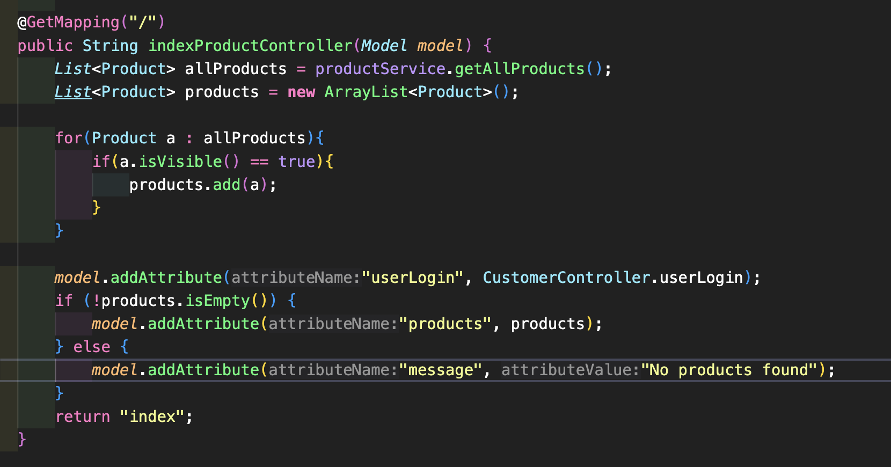
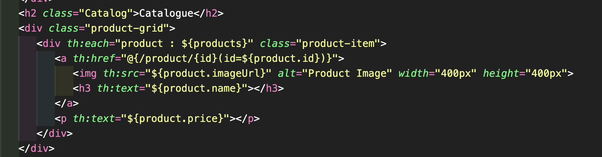
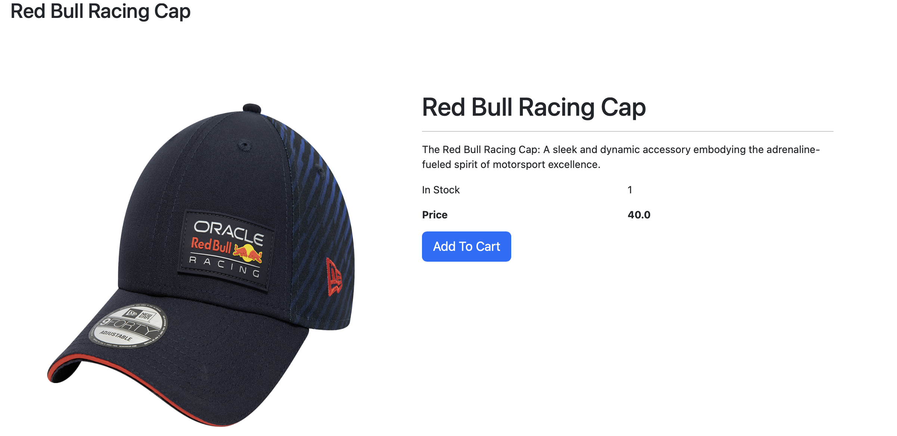
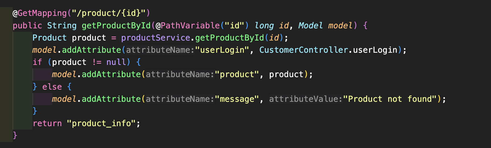

Maven + Docker
For the initial setup of the project. I went to Spring.IO Quickstart
Catalogue: To create the Catalogue, I started by creating a database in PostGres SQL. Once I completed this, I created a table containing all of the product information (name, price, description etc). I populated this table with some products for testing using INSERT SQL statement.
I then created a new Product class with all the necessary fields and a ProductRepository interface to interact with the database. The Products class was populated with all the necessary get & set methods that would come into affect later on in the development. I then created a ProductService class to handle the business logic.
I then created the ProductController class, this class was in charge of the logic of the site.

This piece of code is primarily responsible with the logic behind displaying the catalog of products on the home page of the site. It creates two lists, one for all the products on the site, and one for the visible products on the site.
We loop through all the products on the site, and if they are visible, we add them to the visible products list. Otherwise we ignore them. Once that has been finished, the products list is passed to the ThymeLeaf Template.

This is the Thymeleaf Template. It selects each product from the products list and displays it. I have chosen to use a CSS grid to display them in a more visually appealing format.
Users can click on any of the products, and using GetMapping they will be taken to individual product pages. Where more specific information about each product is available.

Here we see a screenshot taken from an individual product page. This page is created using the same logic as the home page, but instead of displaying all the products, it only displays the one product, with additional information taken from the table.
The code below gets the id of the product that the user has clicked on, and returns it to the product info page, so only the product the user has clicked on is displayed.

Shopping Cart: To create the shopping cart, I used a list approach. Where once a user clicks add to cart on a product, that product is added to a list of products, and displayed in the /cart template. I felt the list was an easier approach as I did not have to construct a new table for the cart.